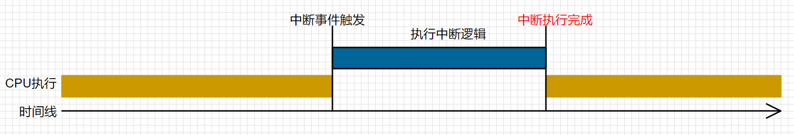

<!DOCTYPE lake>
<h2 data-lake-id="ySgdm" id="ySgdm"><span data-lake-id="u43f6722f" id="u43f6722f">中断概念</span></h2><p data-lake-id="ub2268acf" id="ub2268acf" style="text-indent: 2em"><span class="lake-fontsize-12" data-lake-id="ud59e3a33" id="ud59e3a33">中断是计算机系统中的一种机制，用于响应</span><strong><span class="lake-fontsize-12" data-lake-id="u58c3d910" id="u58c3d910">外部事件</span></strong><span class="lake-fontsize-12" data-lake-id="u9c9dd457" id="u9c9dd457">或</span><strong><span class="lake-fontsize-12" data-lake-id="u9a3c3ede" id="u9a3c3ede">内部事件</span></strong><span class="lake-fontsize-12" data-lake-id="u11e32946" id="u11e32946">,它可以使单片机暂时中断正在执行的程序，转而去执行一个中断处理函数，待中断处理函数执行完毕后，再回到原来的程序继续执行。中断机制使得计算机</span><strong><span class="lake-fontsize-12" data-lake-id="u8236cd27" id="u8236cd27">可以响应各种事件</span></strong><span class="lake-fontsize-12" data-lake-id="u0dab19ac" id="u0dab19ac">，从而提高了计算机的实时性和可靠性。</span></p><p data-lake-id="uc3e7fad6" id="uc3e7fad6" style="text-indent: 2em"><span class="lake-fontsize-12" data-lake-id="u53284b63" id="u53284b63">中断的基本原理是通过硬件或软件检测到中断请求信号，将CPU当前的执行现场保存下来，转而去执行与中断相对应的中断服务程序。中断服务程序执行完成后，再将保存的执行现场恢复，返回到被打断的程序继续执行。在中断过程中，CPU自动完成了现场的保护和恢复，保证了系统的稳定和可靠性。</span></p><p data-lake-id="u082726ee" id="u082726ee"></p><p data-lake-id="u5438e972" id="u5438e972" style="text-indent: 2em"><span class="lake-fontsize-12" data-lake-id="u65af6f2a" id="u65af6f2a">中断事件处理通常是通过中断处理函数实现的，它是预定义好的一段代码，负责处理中断事件，并在处理完成后将控制权交还给原来的程序继续执行。</span></p><p data-lake-id="ubccf7887" id="ubccf7887" style="text-indent: 2em"><span class="lake-fontsize-12" data-lake-id="u79f8757d" id="u79f8757d">中断具有优先级，高优先级的中断可以打断正在执行的低优先级中断。当有多个中断请求同时出现时，中断控制器会根据优先级和抢占功能的设置来确定哪个中断应该被处理。</span></p><p data-lake-id="uc339609b" id="uc339609b" style="text-indent: 2em"><span class="lake-fontsize-12" data-lake-id="u9d2ef5eb" id="u9d2ef5eb">在中断过程中，为了保证系统稳定性，一些中断可以被屏蔽，即不响应该中断。可以通过中断控制器来管理中断优先级和中断屏蔽等操作。</span></p><p data-lake-id="u27853344" id="u27853344"><br/></p><h2 data-lake-id="HpQvj" id="HpQvj"><span data-lake-id="u77ef0618" id="u77ef0618">中断分类</span></h2><p data-lake-id="ua4a7d035" id="ua4a7d035"><span class="lake-fontsize-12" data-lake-id="ud6f65e4d" id="ud6f65e4d">按照处理方式的不同将中断分为</span><strong><span class="lake-fontsize-12" data-lake-id="u60d764a4" id="u60d764a4">内部中断</span></strong><span class="lake-fontsize-12" data-lake-id="u0490526a" id="u0490526a">和</span><strong><span class="lake-fontsize-12" data-lake-id="uf5ea0899" id="uf5ea0899">外部中断</span></strong><span class="lake-fontsize-12" data-lake-id="ue230ba3a" id="ue230ba3a">两种类型。</span></p><p data-lake-id="u5c4301ac" id="u5c4301ac" style="text-indent: 2em"><span class="lake-fontsize-12" data-lake-id="udc74d23a" id="udc74d23a">外部中断是由外部设备（如按键、传感器、通信接口等）产生的中断请求信号，需要通过中断控制器进行处理。通常情况下，外部中断是通过中断输入引脚连接到中断控制器，由中断控制器检测到外部中断请求，然后触发相应的中断服务程序进行处理。</span></p><p data-lake-id="u3fb0ae57" id="u3fb0ae57" style="text-indent: 2em"><span class="lake-fontsize-12" data-lake-id="u299c3069" id="u299c3069">内部中断是由处理器内部产生的中断请求信号，通常是由串口、定时器、DMA控制器、系统时钟等硬件设备产生的中断请求，需要通过中断控制器进行处理。与外部中断不同的是，内部中断不需要外部设备的触发，而是由硬件设备自身产生中断请求，由中断控制器检测到并触发相应的中断服务程序进行处理。</span></p><p data-lake-id="ucfd1e499" id="ucfd1e499"><br/></p><h2 data-lake-id="YuQOY" id="YuQOY"><span data-lake-id="u9e976a9f" id="u9e976a9f">中断触发条件</span></h2><p data-lake-id="ua86f2559" id="ua86f2559"><span data-lake-id="u5e950b0b" id="u5e950b0b">中断触发条件是指在计算机系统中，何时会发生中断事件的条件。不同类型的中断有不同的触发条件，以下是一些常见的中断触发条件示例：</span></p><ol list="u28183869"><li data-lake-id="udc9bd8f4" fid="u88a97cc2" id="udc9bd8f4"><span data-lake-id="u3044bb18" id="u3044bb18">外部设备请求：外部设备（如键盘、鼠标、磁盘等）产生了需要主机处理的事件，比如键盘按键、鼠标点击、设备准备就绪等。</span></li><li data-lake-id="u92bfd49d" fid="u88a97cc2" id="u92bfd49d"><span data-lake-id="ub35cde83" id="ub35cde83">时钟中断：系统中的计时器达到设定的值，用于实现系统的定时功能。时钟中断可以用于任务切换、时间管理等。</span></li><li data-lake-id="u415e2842" fid="u88a97cc2" id="u415e2842"><span data-lake-id="u0050c3db" id="u0050c3db">硬件故障：硬件部件出现故障或错误，需要立即处理，以避免系统崩溃或数据损失。</span></li><li data-lake-id="u4a9d3aa5" fid="u88a97cc2" id="u4a9d3aa5"><span data-lake-id="uec9ef508" id="uec9ef508">软件中断请求：程序执行中执行了特定的软件指令（例如系统调用），请求操作系统执行某些特殊功能。</span></li><li data-lake-id="u6ea78613" fid="u88a97cc2" id="u6ea78613"><span data-lake-id="ufc0f722e" id="ufc0f722e">异常：执行指令时发生了异常情况，如除零错误、非法指令等。</span></li><li data-lake-id="uaa5b7467" fid="u88a97cc2" id="uaa5b7467"><span data-lake-id="u1110558e" id="u1110558e">信号：在类Unix操作系统中，进程之间可以通过发送信号来通知其他进程某个事件已经发生，接收进程可以根据信号类型采取相应措施。</span></li><li data-lake-id="uf28bdeba" fid="u88a97cc2" id="uf28bdeba"><span data-lake-id="u64c7a71b" id="u64c7a71b">网络通信中断：在网络通信中，当数据包到达、连接建立或关闭时，可以触发中断来通知系统网络事件。</span></li><li data-lake-id="u08279ecb" fid="u88a97cc2" id="u08279ecb"><span data-lake-id="u092fdeee" id="u092fdeee">实时时钟中断：用于实时系统，以保证系统在规定的时间内完成任务。一般由硬件时钟支持。</span></li><li data-lake-id="u8dd571c8" fid="u88a97cc2" id="u8dd571c8"><span data-lake-id="u3369184a" id="u3369184a">DMA完成中断：在直接内存访问（DMA）操作中，当数据传输完成时可以触发中断，通知主机数据已经就绪。</span></li><li data-lake-id="ua67ef539" fid="u88a97cc2" id="ua67ef539"><span data-lake-id="u2bec9468" id="u2bec9468">电源管理中断：用于在电源管理模式下唤醒系统，或在电池电量低时通知系统进行相关处理。</span></li></ol><p data-lake-id="u2848b95c" id="u2848b95c"><span data-lake-id="ucbc7d7f4" id="ucbc7d7f4">不同的硬件和操作系统可以支持不同类型的中断触发条件，并且可以根据需要进行配置和定制。中断触发条件的设置通常需要考虑系统的实时性要求、资源分配等因素。</span></p><p data-lake-id="u7ddcd246" id="u7ddcd246"><br/></p>